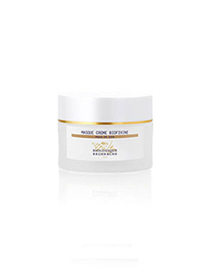
Masque Crème Biofixine
Za „peglanje” dubljih i plićih bora i ujednačen ten.
Maska za zatezanje kože i protiv bora kombinuje svojstva maske i kreme u jednom proizvodu.
Ovaj inovativan, višenamenski
proizvod pruža izuzetan efekat zatezanja i čini kožu glatkom, uz osećaj prijatnosti.
Preporučuje
se za devitalizovanu kožu s vidljivim znacima starenja.
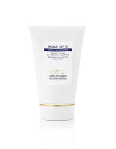
Masque VIP O2
Za baršunast, svetao i blistav ten.
Maska za oksigenaciju i hidrataciju, deluje protiv uticaja zagađenja, vraća blistavost koži
izloženoj stresu i koži kojoj
nedostaje kiseonik. Pospešuje regeneraciju i revitalizaciju epiderma zahvaljujći formuli
bogatoj
biljnim ekstraktima u kombinaciji sa specifičnim kompleksom Biologique Rechercha za
oksigenaciju.
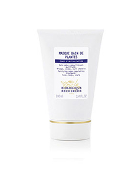
Masque Vivant
Tenu daje blistavost i svežinu; poboljšava tonus.
Maska za uspostavljanje balansa, sa visokom koncentracijom ekstrakta kvasca, krastavca i
hamamelisa poznatog po pročišćavanju
kože. Preporučuje se za seboroičnu kožu, kožu bez sjaja i/ili kožu kojoj nedostaje tonus.
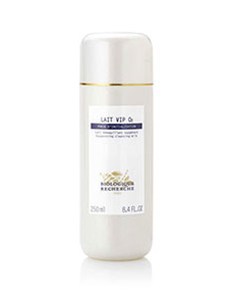
Lait VIP O2
Čisti i ujednačava ten kože izložene uticajima gradske sredine
Mleko za čišćenje kože sprečava uticaj zagađenja, eliminiše nečistoće i umiruje kožu.
Posvetljuje i ujednačava ten. Idealno
je za osobe izložene oštroj klimi i zagađenju, kao i za osobe koje često putuju.
Preporučuje
se za kožu izloženu stresu i devitalizovanu kožu.
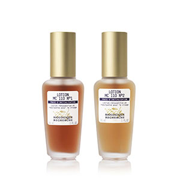
Lotion MC 110
Smanjuje neravnine na koži, ističe oval lica i čini kožu glatkom i čistijom.
PLosion za regeneraciju kojim se postiže efekat eksfolijacije, poboljšava tonus i
popunjavaju dublje i pliće bore. Koristi
se kao dopuna Losiona P50. Lotion MC 110 N°1: preporučuje se za normalnu kožu. Lotion MC
110
N°2: preporučuje se za puniju kožu ili kožu sa smanjenim tonusom.
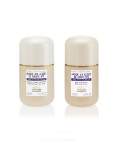
Masque aux Acides de Fruits
Obnovljena koža.
Maska na bazi voćnih kiselina pročišćava i obnavlja kožu s keratozama. Zahvaljujući bogatom
sadržaju voćnih kiselina iz jabuke,
grožđa i đumbira, ova maska potpuno regeneriše kožu. Preporučuje se za puniju kožu, kožu s
keratozama
i znacima starenja.
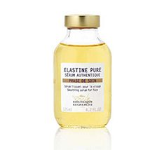
Sérum Elastine Purepro
Glatka koža.
Serum biološkog porekla glača epiderm i nadoknađuje gubitak elastičnosti kože sprečavajući
pojavu dubljih i plićih bora.
Preporučuje se za sve tipove kože. Idealan proizvod za tretman prvih i mimičnih bora, kao i
zone
oko očiju i usana.
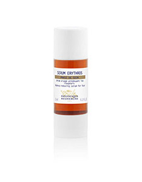
Sérum Erythros
Smanjuje crvenilo i sprečava pojavu novih krvnih sudova ako je koža sklona kuperozi.
Idealan za osetljivu kožu sklonu kuperozi.
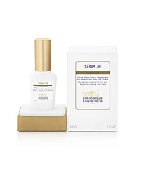
Sérum 3R
Opbnavljanje, regeneracija i reparacija.
Čim se pojave prve bore, ovo je pravi tretman za prevenciju, korigovanje i stimulisanje
prirodnog regenerativnog potencijala
kože. Ovaj koncentrat sadrži 12 aktivih sastojaka koji deluju eksfolijantno, antioksidantno
i
antiin – flamatorno, učvrš ćuju kožu i obnavljaju hidrolipidni sloj, ciljano rešavaju razli
čite
nedostatke i ublažavaju znake prevremenog starenja kože. Idealan za devitalizovanu i/ili
zrelu
kožu.
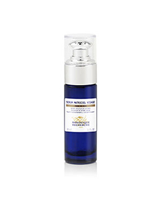
Sérum Matriciel Visage
Reoblikuje strukturu i poboljšava volumen lica.
Namenjen za opuštenu kožu izmenjene strukture i kožu kojoj nedostaje to – nus; popunjava
crte lica i poboljšava elasti čnost
kutanog tkiva. Znaci starenja su vidno ublaženi odmah nakon nanošenja i dugotrajno.
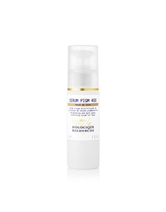
Sérum PIGM 400
Posvetljuje ten i ublažava pigmentne fleke.
Formula bogata aktivnim sastojcima za posvetljivanje tena s dvostruko ja čom koncentracijom
u odnosu na kremu PIGM 400, ja
če deluje na inhibiranje sinteze melanina, a aktivni sastojci za foto-zaštitu i protiv
slobodnih
radikala usporavaju starenje ćelija. Preporu čuje se za kožu s pigmentnim promenama i bez
sjaja.
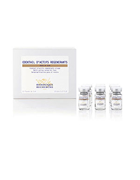
Cocktail d’Actifs Régénérants
Stimuliše regeneraciju epiderma i revitalizuje kožu.
Koktel prepun vitamina i aktivnih sastojaka dobijenih najnaprednijom biotehnologijom za
postizanje višestrukih rezultata
čak i kada je koža izrazito devitalizovana. Stimuliše regeneraciju ćelija, štiti kožu od
štetnih
uticaja slobodnih radikala i oja čava zaštitne funkcije kože, poboljšavaju ći hidrataciju i
tonus
epiderma.
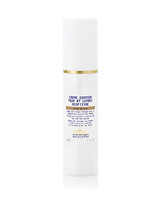
Crème Contour Yeux et Lèvres Biofixine
Glača i smanjuje bore u zoni oko očiju i usana.
Krema – antirid sa efektom zatezanja namenjena je za osetljivu kožu u zoni oko očiju, kao i
za zonu oko usana. Zahvaljujući
brojnim aktivnim sastojcima sa anti-ageing efektom, ovim specifičnim proizvodom ublažavaju
se
bore i ističe lepota pogleda.

Crème Dermopurifiante
Čisto lice, mat ten, blistava i osvežena koža.
Krema za pročišćavanje koja smanjuje crvenilo prouzrokovano aknama i reguliše lučenje
sebuma. Štiti kožu od spoljašnjih agresivnih
uticaja. Tretman za seboroičnu kožu koji je efikasan ali ne isušuje epiderm. Preporučuje se
za
seboroičnu kožu i/ili kožu s disbalansom.

Crème Hydravit’S
Hidrira i revitalizuje epiderm izložen stresu.
Ova krema za hidrataciju sadrži ekstrakt kvasca i termalnih algi. Posvetljuje ten i
revitalizuje kožu bez sjaja, pa se preporučuje
za dehidrirane kože.
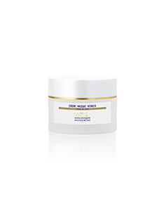
Crème VG Derm
Hidrira i hrani kožu i obnavlja hidrolipidni sloj.
Ova izvandredna krema za hidrataciju bogata je biljnim ekstraktima sa zaštitnim svojstvima
i obogaćena osnovnim masnim kiselinama
sa efektom rekondicioniranja. Konsoliduje strukturu epiderma i idealna je u uslovima
izuzetno
suve klime. Preporučuje se za zrelije i dehidrirane kože. Idealna je za izuzetno suvu kožu.
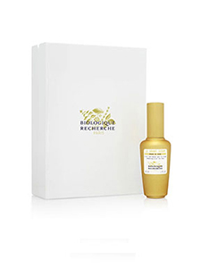
Le Grand Sérum
Najbogatiji aktivnim sastojcima, daje volumen, zateže kožu i čini je blistavom.
Ovaj univerzalni serum je pravi eliksir mladosti sa stimulišućim dejstvom za postizanje
odličnih rezultata. U ovom „vanvremenskom”
serumu su sažeti svi najbolji efekti tretmana za negu kože s dugotrajnim rezultatima.
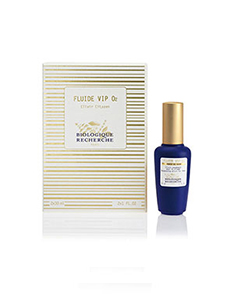
Fluide VIP O2
Ublažava znakove umora, posvetljuje ten, kožu čini glatkom i lepšom.
Zahvaljujući jedinstvenoj formuli sadržanoj u ovom serumu obogaćuje se koncentracija
kiseonika na površini kože i stimulišu
prirodne funkcije epiderma. Pravi fluid protiv zagađenja, sa efektom hidratacije i
oksigenacije,
efikasno štiti kožu od agresivnih spoljašnjih uticaja u gradskoj sredini tokom celog dana.
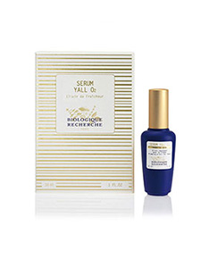
Sérum Yall~O2
Nadoknađuje volumen na mnogo nežniji način nego što se to čini mikroinjekcijama.
Inovativna formula ovog seruma zasnovana na nanotehnologiji i agensima za oksigenaciju,
pruža intenzivni tretman i trenutne
efekte koji se produžavaju redovnom upotrebom. Eliksir za postizanje volumena i
regeneraciju
kože glavno je oružje u borbi protiv starenja.
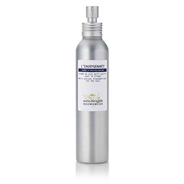
L’Eauxygénante
Daje blistav izgled i fiksira šminku.
Sprej sa antioksidantnim svojstvima, za hidrataciju i oksigenaciju; stimuliše epiderm
oblažući ga zaštitnim slojem. Sadrži
visoke koncentracije ekstrakta pomorandže i kivija bogatih vitaminima A i C, kao i ekstrakt
runolista
koji deluje na slobodne radikale, kao i specifičan kompleks Biologique Recherecha za
oksigenaciju.


{kind=link}
{kind=link}
{kind=link}
{kind=link}
{kind=link}
{kind=link}